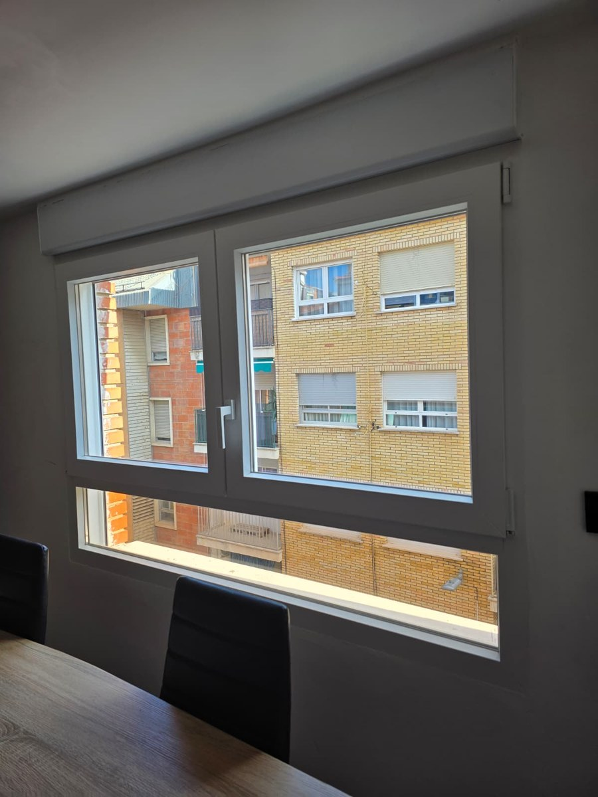

Ventanas en Ibi: Corta el Frío Extremo y las Heladas
En Ibi, a más de 800 m de altitud, el frío invernal dispara el consumo de calefacción. Ventanas Bañuls instala ventanas de PVC Cortizo de 5 y 6 cámaras y aluminio con RPT que eliminan el goteo por condensación en marcos fríos y ahorran hasta un 45% en gas o electricidad. Medición gratuita a 15 min por la A-7.
Muchos hogares en Ibi sufren el clásico problema de ventanas de aluminio antiguo sin rotura de puente térmico: marcos helados al tacto, moho en las esquinas y sensación permanente de corriente fría. Con nuestros cerramientos estancos recuperas el confort de tu hogar en 1 solo día.

Por qué el Clima de Ibi exige Ventanas de Alto Rendimiento
La Foia de Castalla registra las temperaturas más frías del interior alicantino:
Adiós al Marcos Helados y Goteras
El PVC Cortizo tiene una transmitancia térmica ínfima (Uw ≤ 1.1 W/m²K). El marco interior permanece siempre a temperatura ambiente, frenando el choque térmico que crea moho y charcos en el alféizar.
Retención del Calor de Calefacción
Combinamos doble vidrio Climalit bajo emisivo (Low-E) con cámara rellena de gas argón. El calor de tus radiadores o bomba de calor rebota hacia el interior y no se escapa por el cristal.
Medición en Ibi sin Compromiso
A solo 15-20 minutos por la A-7, acudimos a tu piso o casa en Ibi para tomar medidas exactas con medidor láser y mostrarte muestras reales de perfilería y acabados.
Cierre Perimetral Hermético: Compruébalo en Vídeo
Observa el funcionamiento del herraje perimetral Roto Frank con múltiples puntos de compresión que instalamos en nuestras obras.
Cambia tus Ventanas en 1 Día
En una jornada laboral habitual de mañana y tarde retiramos la vieja carpintería e instalamos las nuevas ventanas de PVC o aluminio con RPT, sellando todo el contorno para que esa misma noche disfrutes de un calor uniforme y silencio absoluto.



Preguntas Frecuentes sobre Ventanas en Ibi
¿Qué es mejor para Ibi: PVC o Aluminio RPT?
Para el clima riguroso de Ibi con heladas frecuentes bajo cero, el PVC es el rey indiscutible en aislamiento térmico gracias a sus cámaras de aire internas y a que el material plástico no transmite el frío exterior. Si buscas estética minimalista con perfiles muy finos, el aluminio con rotura de puente térmico de gama alta es también una magnífica opción.
¿Hay algún recargo por venir a Ibi a medir o instalar?
No. Ibi forma parte de nuestra área de actuación diaria y prioritaria. La toma de medidas inicial y el desplazamiento del equipo técnico no tienen ningún coste para el cliente.
¿Cómo me beneficio de la deducción IRPF del 40% en Ibi?
Sustituyendo tus viejas ventanas por nuestros sistemas de alta eficiencia y aportando los certificados de transmitancia técnica que te entregamos junto al certificado de eficiencia energética antes y después de la obra.
Pide tu Medición Gratuita de Ventanas en Ibi
Habla directamente con nuestros carpinteros instaladores y recibe un presupuesto cerrado: